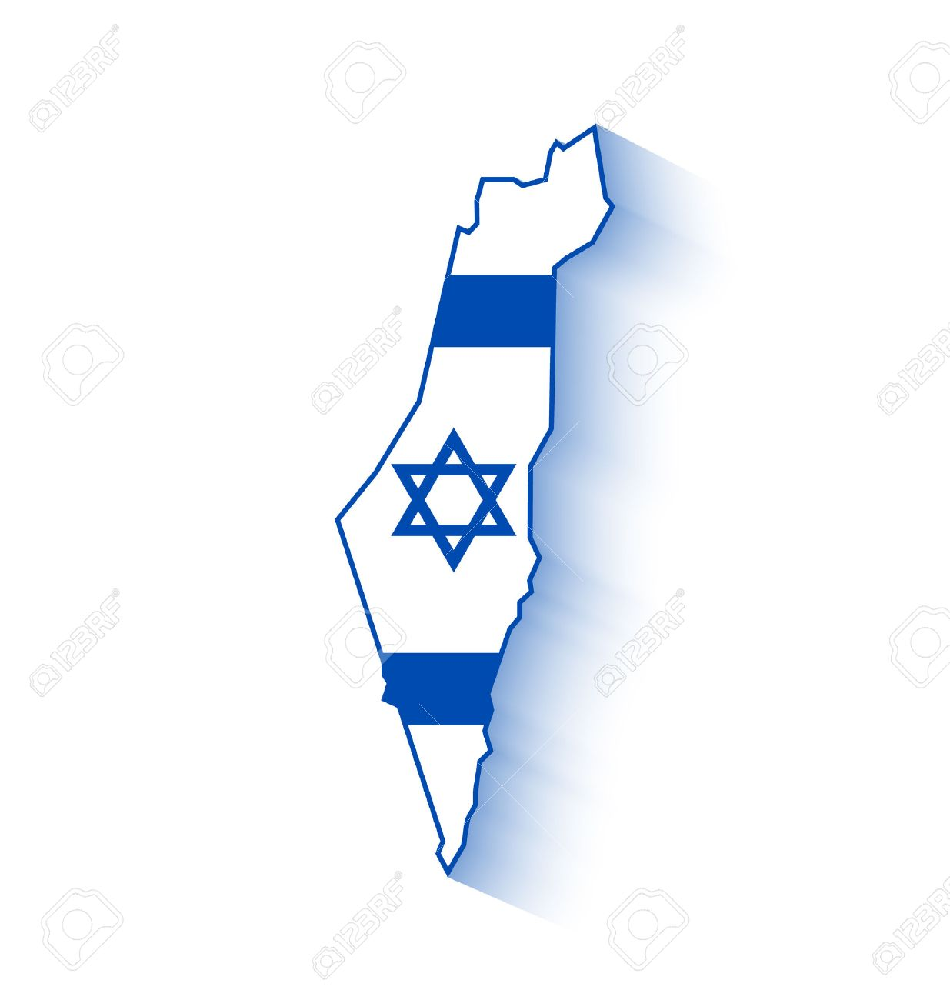

ISRAEL (Otrora Palestina)
(Tierra natal de mi abuelo Arie)

Mi abuelo Arie nació en el año 1944 por lo que Israel llevaba el nombre de Palestina y estaba administrada por Inglaterra.
Historia
Israel conocida anteriormente como la Tierra de Canaán. En ella vivieron nuestros patriarcas: Abraham, Isaac y Yaacob. Posteriormente fue oficialmente conquistada por los descendiente de las 12 tribus, comandados por Josué (Yehoshua) y fue conocida como Eretz Israel (O tierra de Israel).
La historia de Israel es larga y me quiero centrar en la época en la cual mi abuelo vivía, sin embargo, no dejaré de mencionar la cronología de eventos:
Época de los jueces.
- Época de los reyes.
- Dominación babilónica, persa, griega. Reino Jashmoneo (autonomía judía).
- Dominación Romana (Cambian el nombre a Palestina, tierra de filisteos)
- Dominación Bizantina.
- Bajo imperio islámico. Período de las cruzadas.
- Período Mameluco.
Dominación del Imperio Otomano.
- Dominación Británica (época de mi abuelo)
Independencia del Estado de Israel (También época de mi abuelo)
Durante todos estos años siempre hubo presencia judía en la tierra de Israel. Fue una comunidad de judíos ortodoxos que vivían de manera muy precaria y muchas veces subsistían gracias al diezmo que daban los judíos que vivían en la diáspora.
Siempre hubo cierta inmigración, ya sea por judíos que fueron expulsados de los distintos reinos europeos, o aquellos que escaparon de ataques antisemitas, y también por razones religiosas, ya que la esperanza de la llegada del Mesías siempre estuvo en la mente de los judíos y algunos movidos por la idea de que al ser enterrados en la tierra santa les ahorraría el recorrido que harían los cuerpos en la resurrección que se llevaría a cabo con la llegada del salvador.
Pero fue a partir de finales del siglo XIX que la inmigración a Israel se hizo de manera más organizada. Se crea el sionismo políticos, el cual manifiesta la necesidad de establecerse en la tierra de Israel para desarrollarla y eventualmente poder crear un nuevo estado de judíos.
En 1917, al final de la Primera Guerra Mundial, Israel pasa a ser administrados por Inglaterra. Al Reino Unido se le concedió el control de Palestina (de Israel hoy, Cisjordania, la Franja de Gaza y Jordania) por la Conferencia de Paz de Versalles que estableció la Sociedad de Naciones en 1919.
Durante el mandato británico, creció la tensión entre árabes y judíos residentes en esa zona, ya que los británicos habían hecho dos promesas con respecto al territorio: había prometido a los locales árabes, la independencia de un país unido árabe que cubriría la mayor parte del Medio Oriente árabe, y también se había comprometido a crear y fomentar una nación judía en las condiciones en la Declaración Balfour de 1917.
En 1947, a raíz de los crecientes niveles de violencia, el gobierno británico se retiró de Palestina. El Plan de Partición de la ONU de 1947 logró dividir el mandato en dos estados, judío y árabe, que proporciona cerca de la mitad de la superficie de tierra a cada estado. Inmediatamente después de la aprobación del Plan de Partición de las Naciones Unidas, los dirigentes árabes palestinos rechazaron el plan para crear, hasta ahora sin nombre, un estado judío y pusieron en marcha una guerra de guerrillas.
El 14 de mayo de 1948, un día antes del final del mandato británico de Palestina, los líderes de la comunidad judía en Palestina dirigida por el primer ministro David Ben-Gurion, realizaron la declaración de independencia, y el Estado de Israel se estableció sobre la partición correspondiente dada por parte de la UNSCOP para el estado judío. Mi abuelo tenía 4 años de edad y ese día quedo sin casa por los ataques árabes.
Al siguiente día, los ejércitos de Egipto, el Líbano, Siria, Jordania e Irak invadieron el territorio con la esperanza de aniquilar el nuevo Estado judío, dando comienzo a la guerra árabe-israelí 1948. La naciente Fuerza de Defensa de Israel rechazó a los países árabes de la parte de los territorios ocupados, para así ampliar sus fronteras más allá de la partición original dada por la ONU. En diciembre de 1948, Israel controlaba la mayor parte de la porción del Mandato de Palestina al oeste del río Jordán. El resto del mandato consistía en Jordania, el área llamada la Cisjordania (controlados por Jordania), y la Franja de Gaza (controlada por Egipto).
Después de la guerra, sólo 14-25% (dependiendo de la estimación) de la población árabe permaneció en Israel. Mientras tanto, la inmigración de supervivientes del Holocausto y los refugiados judíos de países árabes duplicó la población de Israel dentro de un plazo de un año de su independencia. En los años siguientes unos 850.000 sefardíes y Judíos Mizrahim huyeron o fueron expulsados de los países vecinos árabes y de Irán. De éstos, aproximadamente 680.000 se establecieron en Israel.
La población judía de Israel para, cuando nace el nuevo Estado, era de 914.700 habitantes, 156.000 de ellos no judíos y esta fue creciendo a una muy alta tasa por años, alimentado por las olas de inmigración judía desde todo el mundo. Ya que, de acuerdo con la Ley del Retorno, tienen derecho a convertirse en ciudadanos israelíes a su llegada, cualquier judío del mundo.
Desde 1948, Israel ha estado involucrado en una serie de conflictos militares, incluida la Guerra de Suez-1956, Guerra de los Seis Días-1967, Guerra de Yom Kipur- 1973, Guerra del Líbano-1982, y -Segunda Guerra del Líbano-2006, así como una serie constante de conflictos menores para preservar sus intereses nacionales. Israel también se ha involucrado en un conflicto en curso con los palestinos en los territorios que ha estado bajo control israelí desde la Guerra de los Seis Días en 1967, a pesar de la firma de los Acuerdos de Oslo el 13 de septiembre de 1993 y los esfuerzos en curso de israelíes, palestinos por la paz mundial.
Datos actuales
Israel es un país soberano de Oriente Próximo que se encuentra en la ribera sudoriental del mar Mediterráneo. Limita con el Líbano al norte, con Siria y Jordania al este, con Palestina al este en Cisjordania y al oeste en la Franja de Gaza, con Egipto al suroeste y con el golfo de Aqaba al sur, en el mar Rojo.
Israel es el único Estado judío del mundo. Es también el hogar de árabes musulmanes, cristianos, drusos y samaritanos, así como otros grupos religiosos y étnicos minoritarios. La capital, sede del gobierno y mayor ciudad del país es Jerusalén; el principal centro económico y financiero se encuentra en Tel Aviv-Yafo y el mayor centro industrial se localiza en Haifa.
El Estado de Israel tiene una población de aproximadamente 8.680.000 habitantes a fecha de mayo de 2017; de ellos un 74,7% son judíos, un 20,8% son árabes, y el 4,5% restante incluye a cristianos no árabes, musulmanes no árabes, familiares de judíos no registrados como tales y residentes sin adscripción religiosa o étnica.
Idiomas en Israel
Israel tiene dos idiomas oficiales: el hebreo y el árabe, aunque el inglés también se usa a nivel oficial.
Israel es una democracia representativa con un sistema parlamentario y sufragio universal. El primer ministro actúa como jefe de Gobierno y la Knéset como cuerpo legislativo de Israel.
La cocina israelí consta de platos locales de las personas nativas de Israel y platos traídos a Israel por los judíos de la diáspora. Desde antes de la creación del Estado de Israel en 1948, y sobre todo desde finales de 1970, se ha desarrollado una cocina de fusión judía israelí.
La cocina israelí ha adoptado, y sigue adoptando, elementos de varios estilos de cocina judía y cocina regional, en particular los estilos mizrají, sefardí y asquenazíes de cocina. Incorpora muchos alimentos que tradicionalmente se comen en medio oriente y la cocina mediterránea, y alimentos como el falafel, humus, msabbha, shakshouka, cuscús y za'atar son ampliamente populares en Israel hoy en día.
Otras influencias en la cocina son la disponibilidad de alimentos comunes en la región mediterránea, especialmente ciertos tipos de frutas, verduras, productos lácteos y pescado; los platillos tradicionales distintivos se preparan en tiempos de festividades; se mantiene la tradición kosher; y costumbres específicas para Shabat y diferentes fiestas judías, como la jalá, jachnun, malawach, pescado relleno, hamin y el sufganiyot .
Existen nuevos platillos a base de productos agrícolas, como las naranjas, aguacates, productos lácteos y pescado, y otros basados en las tendencias mundiales, los cuales se han introducido en los últimos años, y los cocineros con formación en el extranjero han traído elementos de otras cocinas internacionales.